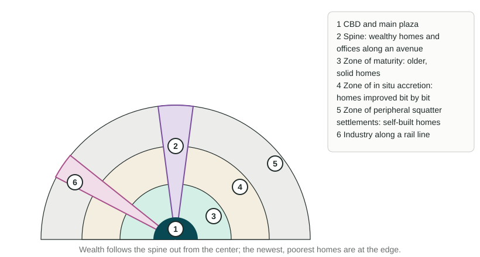

A city is not a random jumble. Offices, factories, rich homes and poor homes tend to end up in certain places. Geographers have built models that describe these patterns. This topic teaches seven, plus the idea that ties many of them together.
The CBD and bid-rent
The central business district (CBD) is a city's commercial core: offices, banks, stores, hotels and city government, usually where the main transport routes meet. Recall bid-rent theory: land users bid the most for land that everyone can reach easily. In a city, that is the center, so banks and offices outbid homes for it, land values peak there and buildings go up instead of out. Moving away from the CBD, land gets cheaper, so homes get bigger and buildings lower. Several models below follow from that one idea.
Four models of North American cities

Concentric zone model (Ernest Burgess, 1925, based on Chicago). The city grows outward in rings around the CBD. Zone 1 is the CBD. Zone 2, the zone in transition, holds factories, warehouses and run-down housing where new immigrants first settle. Zone 3 holds the homes of factory workers who have moved up and out. Zone 4 holds the larger homes of the middle class. Zone 5 is the commuter zone, suburbs whose residents travel to the CBD. As each group gains money, it moves outward and a poorer group takes its place. The model assumes flat land, one center and growth in every direction. It fits early 1900s Chicago, a city of streetcars, reasonably well. It ignores transport lines, landforms such as Chicago's own lakefront, and the car.
Sector model (Homer Hoyt, 1939). Cities grow in wedges, or sectors, outward from the CBD along transport lines. Once a wedge has high-rent homes, they keep spreading outward in that direction, often along a pleasant feature such as a lakeshore or a boulevard. Factories form a wedge along a rail line or river, with low-income housing beside it. Chicago's wealthy North Shore, stretching north along Lake Michigan, is a classic example. The model still assumes one CBD.
Multiple nuclei model (Chauncy Harris and Edward Ullman, 1945). A city has several centers, or nuclei, not just one: the old CBD, a port, a university, an airport, an industrial district. Similar uses cluster near each other; some uses push each other away (heavy industry and wealthy homes rarely sit side by side). Metro Los Angeles, with many separate centers, fits well. The model does not say where the nuclei will form.
Galactic city model, also called the peripheral model. This model describes US metro areas built for the car after about 1970. The old CBD remains, but much of the metro area's office space, shopping and jobs moves to edge cities spaced along a ring highway (a beltway) at major interchanges. Homes fill the land between, and people drive from suburb to edge city without passing downtown. Metro Atlanta, with edge cities such as Perimeter Center and Cumberland near the I-285 beltway, and the Washington, D.C., area, with Tysons near the Capital Beltway, fit well. The model fits poorly in older, transit-based cities and outside North America, and downtowns that have regained residents push against it.
Models from other world regions

Latin American city model. The CBD sits beside the main plaza, a pattern from Spanish colonial planning. A spine of offices, stores and wealthy homes runs outward along a grand avenue to a modern mall and an elite suburb; in Mexico City, the Paseo de la Reforma plays this role. Around the center, rings get poorer moving outward: the zone of maturity, with older, solid homes; the zone of in situ accretion, where families improve their homes bit by bit; and the zone of peripheral squatter settlements. A squatter settlement, also called an informal settlement, is housing built by residents on land they do not legally own or rent, often without piped water or sewers. Lima's hillside settlements fit this pattern. Unlike the concentric zone model, the poorest people live at the edge, not near the center.
Southeast Asian city model. The old colonial port is the focus, not a single CBD. Around it lie a commercial zone built for Western traders, a commercial zone run by immigrant merchants (often Chinese), a government zone, zones of mixed land uses, new middle-class suburbs, squatter areas and, at the edge, market gardens and new industrial estates. Jakarta and Bangkok grew around ports and fit parts of this pattern.
African city model. Many African cities have three CBDs side by side: a colonial CBD of offices in a street grid, a traditional CBD of small shops, and an open-air market zone. Around them lie neighborhoods grouped by ethnicity, a mining or factory zone, and at the edge, informal settlements. Colonial rule built separate districts for Europeans and Africans, which explains the split center. Fast growth since independence has added large informal settlements at the edge of cities such as Nairobi, Kenya.
The urban models side by side
| Model | Key idea | Fits well | One limit |
|---|---|---|---|
| Concentric zone | Rings around one CBD | Early 1900s Chicago | Ignores transport lines and the car |
| Sector | Wedges along transport lines | Chicago's North Shore | Still one CBD |
| Multiple nuclei | Several separate centers | Los Angeles | Does not say where nuclei form |
| Galactic city | Edge cities along a ring highway | Atlanta, Washington, D.C. | Fits car-based US metros only |
| Latin American | Wealthy spine; poorest at the edge | Mexico City, Lima | Cities change fast; many edges now improve |
| Southeast Asian | Old port as the focus | Jakarta, Bangkok | Built on colonial-era cities |
| African | Three CBDs; informal edge | Nairobi | Africa's cities differ widely |
To use a model on an exam: name it, apply it to the real city given, and say how well it fits and why. A model is a tool for thinking, not a map of any one city.